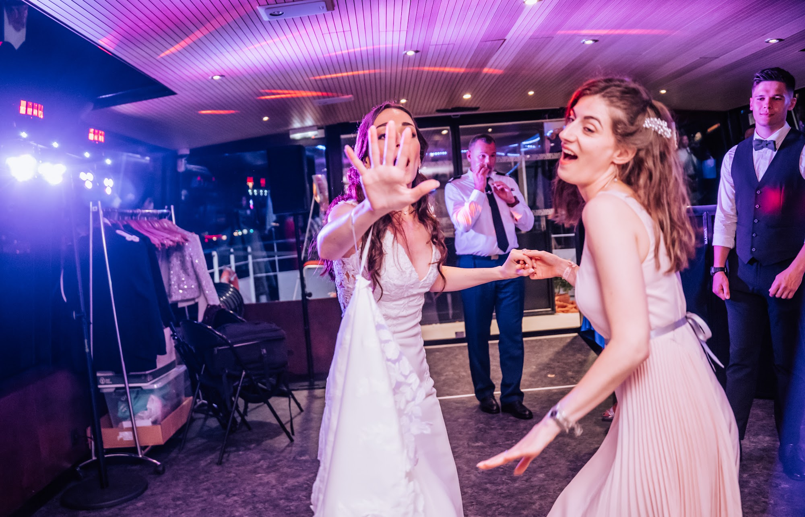
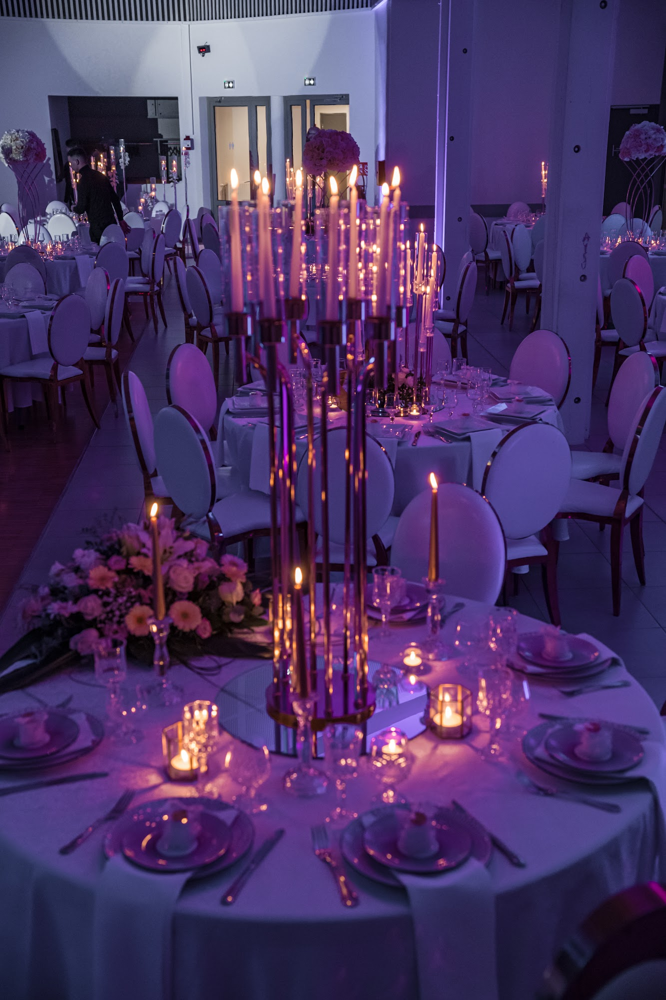
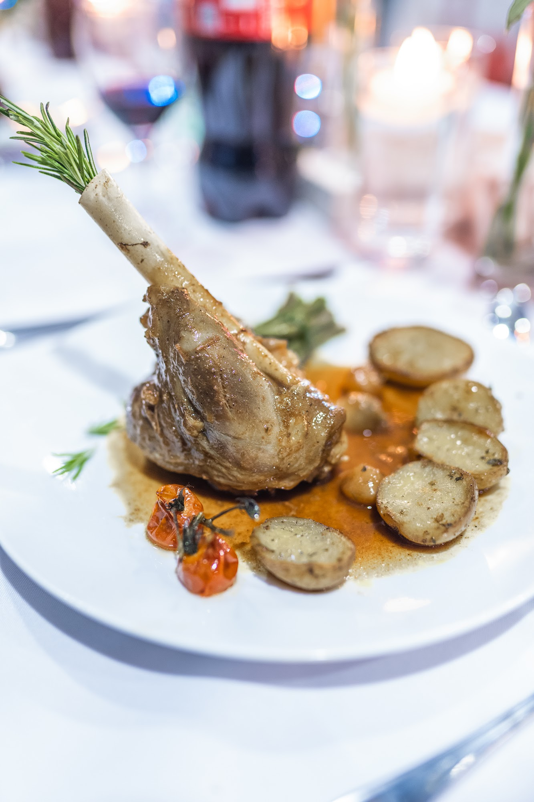

Photographe et vidéaste événementiel à Lyon : séminaires, événements privés et shooting produit
Un séminaire, une soirée d’entreprise, un anniversaire ou un lancement de produit ne se photographient pas comme un mariage. Et pourtant, on y cherche la même chose : des gens vrais, une ambiance qu’on ressent, et des images qui servent à quelque chose une fois l’événement terminé.

Le même regard, du mariage à l’entreprise
Photographier des mariages apprend une chose : anticiper. Savoir où sera l’émotion avant qu’elle arrive, se placer au bon endroit sans gêner personne, travailler vite quand la lumière est difficile. C’est exactement ce dont on a besoin pour couvrir un événement d’entreprise ou une fête privée.
Séminaires, conventions et soirées d’entreprise
Prises de parole, ateliers, temps forts, échanges entre collaborateurs, soirée de gala : je couvre l’ensemble de l’événement et je livre des images prêtes pour votre communication interne, votre site, LinkedIn ou la presse.
Pour les soirées, je travaille en lumière naturelle tant que c’est possible, puis avec un éclairage discret. L’objectif : des photos vivantes, pas des alignements de badges.
Événements privés : on fête quoi ?
Fiançailles, anniversaires, baptêmes, bar et bat-mitsva, demandes en mariage : ce sont souvent les plus belles soirées. Moins de protocole, plus de spontanéité. Je m’adapte au rythme de la fête et je garde la même exigence que pour un mariage, du détail de la table jusqu’à la piste de danse.

Trois conseils pour un événement privé réussi en photo
Prévoyez un moment de lumière. Un toast en extérieur en fin de journée, une bougie sur chaque table, une guirlande au-dessus de la piste : la lumière fait la moitié de l’ambiance sur les photos.
Désignez un proche qui connaît tout le monde. Il m’aidera à repérer les personnes importantes et à réunir la famille pour une photo de groupe en deux minutes, pas en vingt.
Laissez la fête vivre. Les meilleures images arrivent quand plus personne ne fait attention au photographe. Mon travail, c’est justement de me faire oublier.
Portraits corporate et image de marque
Un portrait professionnel réussi ne ressemble pas à une photo d’identité. Je réalise des portraits de dirigeants et d’équipes, sur place, dans vos locaux, avec un rendu cohérent pour toute l’entreprise, du site web aux profils LinkedIn.
Shooting produit et culinaire
Packshot sur fond neutre pour l’e-commerce, mise en scène lifestyle pour les réseaux sociaux, photos de plats pour les restaurants, traiteurs et chefs : un produit doit donner envie avant même qu’on le touche ou qu’on le goûte. Je travaille la lumière, les matières et les reflets pour que l’image vende.
Cosmétiques, mode, accessoires, gastronomie : chaque projet commence par un brief simple pour comprendre votre univers et vos usages.

Fond blanc ou mise en scène ?
Le fond blanc est incontournable pour une boutique en ligne : il met le produit au centre, sans distraction, et respecte les exigences des places de marché. La mise en scène, elle, raconte une histoire : une crème posée sur une serviette en lin, un flacon dans la lumière du matin, un plat sur une table dressée.
La plupart des marques ont besoin des deux. On peut réaliser les deux séries pendant la même séance, pour un rendu cohérent entre votre site et vos réseaux sociaux.
La vidéo : teasers et films de marque
Un film court de 30 secondes à 2 minutes résume un événement mieux qu’un long reportage. Je réalise aussi des films de marque pour présenter un produit, un lieu ou un savoir-faire, en version horizontale pour votre site et verticale pour les réseaux sociaux.
Lyon, ville d’événements
Lyon accueille chaque année des congrès, salons et événements d’entreprise de toutes tailles : à la Cité Internationale, dans les tours de la Part-Dieu, à Confluence, dans les hôtels de la Presqu’île ou dans les domaines des Monts d’Or et du Beaujolais. Je m’adapte à chaque lieu, de la salle plénière sans fenêtre à la terrasse au coucher du soleil.
Pourquoi un photographe professionnel ?
Parce que les photos d’un événement servent longtemps : rapport annuel, recrutement, communication de l’année suivante, presse. Une image floue ou mal éclairée coûte plus cher qu’un photographe, parce qu’elle dessert votre image. Un professionnel sait aussi rester invisible pendant les prises de parole et capter les échanges spontanés qui font vivre un reportage.
Droits d’utilisation des images
En France, le photographe reste l’auteur de ses images. Les usages qui vous sont cédés (site, réseaux sociaux, impression, publicité) sont précisés dans le devis, simplement et sans mauvaise surprise. Pour les photos de vos collaborateurs, pensez à recueillir leur accord pour la diffusion.
Comment se passe une collaboration
On échange d’abord sur vos objectifs et vos usages : site, réseaux sociaux, presse, impression. Je vous envoie un devis clair. Si besoin, on fait un repérage. Le jour J, je travaille en autonomie avec un interlocuteur sur place. Les images sont livrées retouchées, dans les formats dont vous avez besoin.
Questions fréquentes
Intervenez-vous en dehors de Lyon ?
Oui. J’interviens à Lyon, dans toute la région Auvergne-Rhône-Alpes (Isère, Ain, Savoie, Haute-Savoie, Drôme, Ardèche) et partout en France. Les déplacements à l’étranger sont possibles sur demande.
Dans quels formats livrez-vous les photos et vidéos ?
En haute définition pour l’impression, en version optimisée pour le web, et en formats adaptés aux réseaux sociaux, y compris la vidéo verticale.
Pouvez-vous couvrir un événement en photo et en vidéo en même temps ?
Oui, la photo et la vidéo peuvent être réunies sur un même événement, avec un rendu cohérent entre les deux.
Comment obtenir un devis ?
Envoyez-moi la date, le lieu, le type d’événement et vos besoins (photo, vidéo, formats). Je vous réponds rapidement avec une proposition adaptée.
Un événement ou un shooting en préparation ? Parlons-en.
Parlons de votre projet